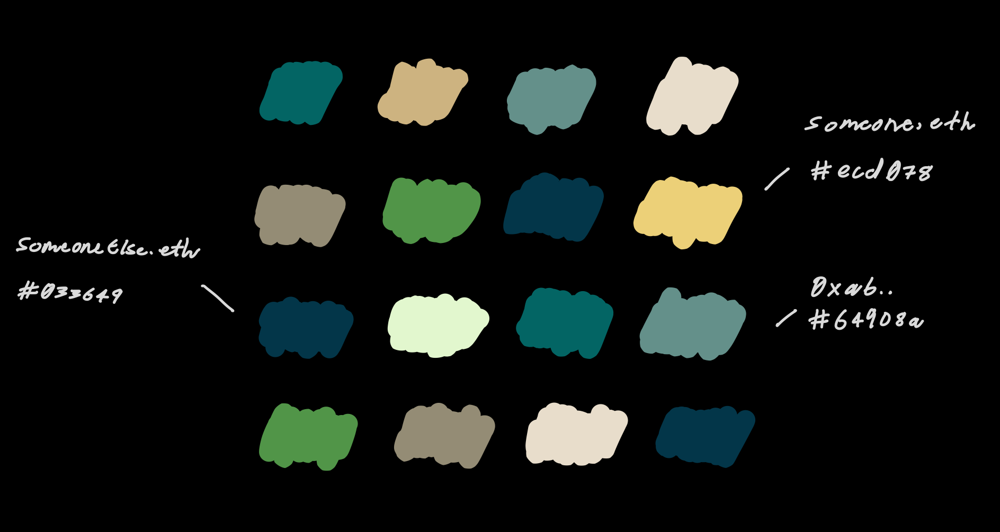

At the most fundamental level, ternary funding is a mechanism for locking funds until a public good is delivered, and then allowing a set of validators to vote on its release. A joint token is a novel type of NFT that replaces these funds, but is nevertheless locked in the same way.
It was first proposed on May 6, and detailed in a paper on July 14. In some ways, it’s the predecessor to Vitalik Buterin’s retroactive public goods funding, that was proposed just a week later.
Validators need to attest that a specific set of predefined criteria have been met. The criteria are specified by the funding originator at the beginning of the round. This is to ensure that the work was actually delivered.
Of course, many entities need funding upfront. In this respect, it can be described as a secondary funding source to provide further incentive to undertake the work in the first place.
Here’s where things get more interesting. Validators can simultaneously be used for another purpose — when their transaction is submitted to the staking contract, their address can be mapped to a randomly selected colour, and collectively this mapping can be used to create an NFT that represents all validators. The function that assigns each colour uses each address as the seed, but also contains other variables so the final NFT can’t be gamed to look a certain way.
The below is a primitive example just to illustrate the concept.

It’s art with another layer — the token contains a data structure of every address and colour pair. Indeed, this data structure needs to be parsed off-chain to create a visual representation. This way everything can be stored on-chain.
There’s an inherent elegance to this. The same validators that were securing the funding round have also collectively formed a token in a single transaction. It not only eliminates the need for a separate donation pool, but provides a further incentive to become a validator in the first place — having your contribution displayed visually.
An additional benefit of storing only the data structure on-chain is composability. Different kinds of front ends can be built to parse it in different ways. With a couple of extra lines of javascript, the NFT becomes interactive. Hover over an individual entry on the grid and the validator address or ENS name is displayed.
During the minting process, more complex mappings beyond colours can also be used, so long as everything is stored on-chain and gas fees are taken into account.
Validators can come from a diverse range of backgrounds. Everyone from those with an interest in the public good, to those that want to contribute to a specific cause, to more prominent figures in the community.
Each validator can then publicly post the transaction hash that links them to the token, if they choose to do so. When a threshold of validators is reached, and the minting contract can be called, the end result is not only something that’s probably nice to look at, but represents a set of people that made expenditures to generate it in the first place.
The token is locked until attestation by a random subset of validators. If consensus is reached to release the token to the party that developed the public good, it now represents:
This thing probably has a bit of value. Even more so if a better known validator happened to join the pool.
As it’s ultimately an ERC-721 token, the party that developed the public good can either choose to hold on to it or trade it in any NFT marketplace.
There isn’t one, and this is by design.
The token is either released to the party that delivered the public good, or it’s burned. At no point do validators receive a direct reward and hence there is no cryptoeconomic incentive to participate.
At first glance this might sound idealistic, yet that’s far from the case — besides the usual philanthropic motivations, there’s an entirely new incentive — having your address mapped, and visually displayed, in a very unusual kind of NFT.
The paper can be found here.